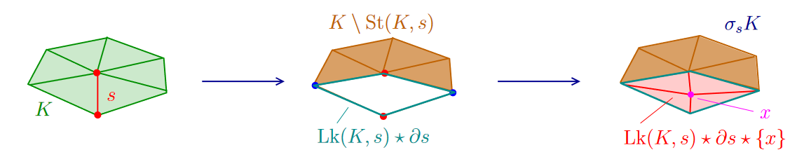
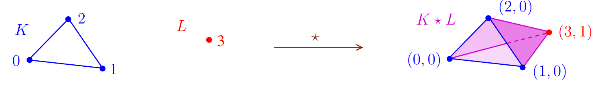
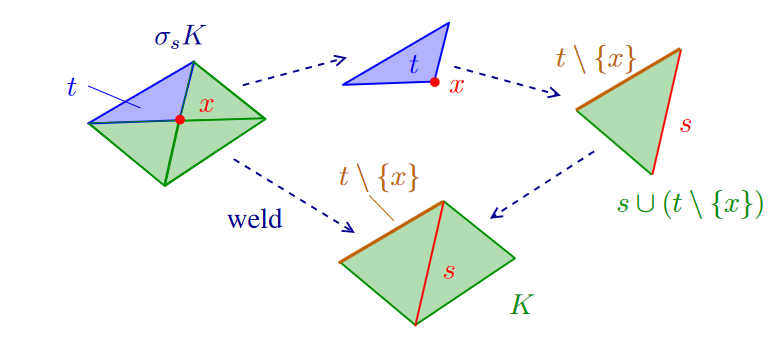
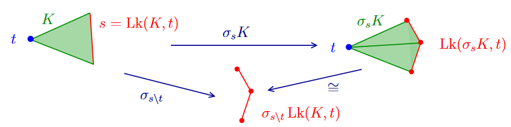

Formalizes abstract simplicial complexes, links, joins, and stellar subdivisions in Lean, proving identities used in combinatorial topology.
Abstract
The theory of simplicial complexes is a cornerstone of topology, offering a sophisticated tool for computing invariants. We present a formalization of abstract simplicial complexes and stellar subdivisions in the Lean proof assistant. We adopt a purely combinatorial framework in order to provide a cohesive foundation for studying the theory of stellar subdivisions as seen in many contexts of combinatorial topology. In particular, we provide formalizations of morphisms between abstract simplicial complexes; several crucial constructions and operations on complexes, such as links and joins; and perform a comprehensive study of how stellar subdivisions interact with these operations. We state and prove a number of identities commonly used in the study of triangulated manifolds, such as deriving equivalences between links in an abstract simplicial complex $K$ and in a stellar subdivision $σ_s K$, including results with no references in the standard literature. To our knowledge, this is the first formalization of stellar subdivisions in any proof assistant.
Problem
Simplicial complexes and stellar subdivisions are foundational tools in combinatorial topology, but stellar subdivisions had not been formalized in any proof assistant. A cohesive combinatorial foundation was needed to support later work such as Alexander and Pachner theorems.
Approach
Abstract simplicial complexes are defined in Lean as downward-closed collections of finite sets over an arbitrary base type, dropping the geometric module structure. Morphisms between complexes and operations such as links, joins, stars, and face boundaries are formalized. Stellar subdivisions and welds are defined using iterated joins and unions with type-casting lemmas, and their interaction with these operations is studied.

Figure 4 : Example of a stellar subdivision, computed in steps. The interior of the star around s is removed and the barycenter x is placed inside, which is then fully connected to the complex via a join to \text{Lk}(K,s)\star\partial s .

Figure 3 : Example of the join of two simplicial complexes, K and L . In fact, K\star L\cong\text{Cone}(K,3) .
Results
Numerous identities relating links, joins, and stars in a complex K and its stellar subdivision are stated and proved, including results with no standard literature reference. Some hypotheses (e.g. finiteness) were removed and isomorphisms strengthened to equalities. The work is presented as the first formalization of stellar subdivisions in any proof assistant.

Figure 5 : Example of a stellar weld, computing how the face t\in\sigma_{s}K changes.

Figure 6 : Geometric example of the identity stated in Theorem 3.9 .